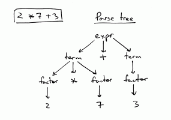
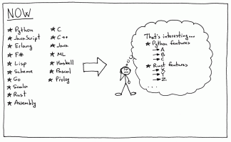
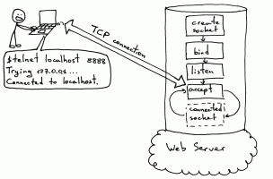
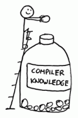
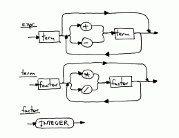

Thank you so much for this awesome series of tutorials. By the way, the series ends here? I notice you haven't been updated for eight months
Also on Ruslan's Blog

Let’s Build A Simple Interpreter. Part 7: …
- 5 years ago
- 20 comments
As I promised you last time, today I will talk about one of the central data …

Let’s Build A Simple Interpreter. Part 9.
- 5 years ago
- 42 comments
I remember when I was in university (a long time ago) and learning systems …

Let’s Build A Simple Interpreter. Part 12.
- 4 years ago
- 28 comments
“Be not afraid of going slowly; be afraid only of standing still.” - Chinese …
Let’s Build A Simple Interpreter. Part 2.
- 6 years ago
- 16 comments
In their amazing book “The 5 Elements of Effective Thinking” the authors …

Let’s Build A Web Server. Part 1.
- 6 years ago
- 88 comments
Out for a walk one day, a woman came across a construction site and saw …

Let’s Build A Simple Interpreter. Part 13: …
- 4 years ago
- 10 comments
Anything worth doing is worth overdoing. Before doing a deep dive into the …

Let’s Build A Simple Interpreter. Part 5.
- 5 years ago
- 19 comments
How do you tackle something as complex as understanding how to …

Let’s Build A Simple Interpreter. Part 4.
- 5 years ago
- 13 comments
Have you been passively learning the material in these articles or have you …
- Recommend Recommended 5
- Find More Discussions
Discussion Recommended!
Recommending means this is a discussion worth sharing. It gets shared to your followers' Disqus feeds, and gives the creator kudos!
- TweetShare
- Sort by Best

⚜Philippe†AucazنuЯ • 3 years ago see moreAs many others before me, I landed here looking for a tutorial about parsing. I've found a goldmine here : your articles are really awesome, since they are well constructed, well explained, and with a slight touch of humour too. I am a complete beginner in this field and I can now build something acceptable. So, thank you very much, and I hope next part will come soon (maybe you're a little bit too busy with your new job ?)
Thanks again.P.S. Please excuse my mistakes in english: Frenchmen are not very good at other languages... ;-)
Ilya Nonename • 3 years ago • edited see moreThank you, Made a new language with code that allows a code post modification. Actually all token saved as tokens and i added command to modify them from code. Gives me a lot of flexibility Added this to my project :)
Some code Example. It actually runs as any other script from command line :)
I feel like i made a real beast ))))JCFF • 4 years ago see moreI’m developer since many years. Nevertheless, I’ve never had to create an interpreter, but 4 weeks ago this changed: I have to create a little language with some Excel functions like IF, ROUND, and so on (besides adding, subtracting, multiplying, …).
I found a book on this subject ("Parsing Techniques: A Practical Guide", by David Gries), but it was very hard to read (theoretical, especially).
With time I had it was impossible for me (someone with no experience in compilers or interpreters), reading it, understand it, create the language, test it and integrate it into my application.
So I kept looking for one less hard. Then I found "Language Implementation Patterns", by Terence Parr. The latter was a more affordable book but missing examples and my problem - the eternal problem - was the time. I needed to read less and to advance (program) more.
Then God Himself came down, he embraced me and whispered in my ear: “Don’t be silly. Search Ruslan Spivak’s blog and don’t waste any more time”... x-DDDDD
Although it is a joke, discovery of your blog it has been something like that...
With first book would be by chapter 10, and instead I have already in VB.NET an interpreter that adds, subtracts, multiply and divide (with priority rules), supports module and exponentiation operators, parenthesis and variables.
I still have work to do (some Excel functions like IF, ROUND, ...), but I’m in the right direction and with an acceptable pace.
And that thanks to your blog!
You're one of those people who have a special ability to explain. Each part is easy to understand, with examples...
For me and anyone who needs to do something similar, it's a treasure. Priceless. Really.
Thanks very much.
My little language will take your name! x-DDDDPS.
I highly recommend using TDD to program the interpreter/compiler.
I have been continually adding operators, changing their priority, refactoring, ... and always quiet thanks to my safety net: my tests.
Irwin Rodriguez • 7 days ago see moreHoly mother of god! I finished this chapter already! it took me the whole week but I did it! I think this is the longest chapter of the series. Thanks for sharing this tremendous content.
Igor Pissolati • 2 years ago see moreThanks a lot for your amazing tutorials! it's a shame you did not continue it... But, anyway, I continued by myself with the C# language, looking for a point where I could create an interpreter in the interpreter =)
After some time planning how to do callstacks and classes I got there and now my interpreter is able to interpret the calculator from tutorial 6 (that I rewrote in pascal)! =DNow I'm planning to do a refactoring on the whole project to then make a repository in github, and then implement the things I think matter and I have not implemented yet and maybe even turn the project into an (very simple) embedded language.
Russell Coleman • 2 years ago see moreOne of the best tutorials I've ever read. Lots of fun and learned a lot. This has helped me so much, even in mundane tasks like parsing user input. I always build a grammar and/or an AST now because it just works so smooth. Doing excellent work Ruslan!
Dan Boxall rspivak • 2 years ago see moreOh good, so you are going to continue? This is brilliant by the way, thanks! I'm implementing your python code in java, great fun
rspivak Mod Dan Boxall • 2 years ago see moreYes, it's in the works. You're welcome and good luck with your interpreter!
Yuipas Unknown rspivak • 2 years ago see moreWow, It's great to see you back here! Thanks for all you've done for us.
N. Chauhan • 2 years ago see moreThanks so much for these tutorials! I think after reading up to around part 13 I decided I would actually start writing an interpreter. What I've come out with is a half-decent programming language with custom syntax and now its 2nd release. See my work here: https://github.com/nchauhan... (There's some demos too!)
rspivak Mod N. Chauhan • 2 years ago see moreYou're welcome. That's really great you started working on your own interpreter, way to go!
N. Chauhan rspivak • 2 years ago see moreThanks. It was great fun (and a challenge!) to implement things like user-defined functions, but I've managed to get it running smoothly and I'm proud of myself :D
Grayson Dubois • 3 years ago • edited see moreExcellent tutorials, Ruslan! I have to say, I've always loved the idea of designing my own programming language, but after my Compiler Design course in college, I had about decided that programming language implementation was far more complex than anything I wanted to deal with. Your tutorials have proven that does not have to be the case. What you've managed to do better than anyone else I've seen so far is explain the concepts and implementations in a down-to-earth, easily understood manner that makes the prospect of building an interpreter far less intimidating and even - dare I say it? - fun!
Following your tutorials, I have implemented a Pascal (subset) interpreter in JavaScript https://github.com/MellowCo..., which has proven to be an extremely rewarding experience.
I look forward to more tutorials as you post them, and plan on one day using what I've learned from you to design and implement my own interpreter in Rust.Keep up the great work, and thank you so much for the time you've put into these articles!
Moon • 3 years ago see moreThank you so much for this awesome series of tutorials.
Before I landed on your website, I tried working alone with the Dragon Book, but I wasn't able to write the grammar rules' method on my own, they were messy and full of useless tests. I think I can use the book on my own now, thanks to you.
Good luck writing the next parts, I can wait to study them!
Igor Kulman • 3 years ago • edited see moreThanks for the series, I just finished it, writing a Pascal compiler in Swift as I go https://github.com/igorkulm.... Cannot wait for the next part. Which of the 4 books would you recommend if I want to implement procedure calls while I wait for the part 15?
rspivak Mod Igor Kulman • 3 years ago • edited see moreYou're welcome. Take a look at "Writing Compilers and Interpreters: A Software Engineering Approach" and "Language Implementation Patterns: Create Your Own Domain-Specific and General Programming Languages." Hope that helps. And thanks a lot for showing your project!
LucasAraujo • 3 years ago see moreThank you so much for this tutorial series. I made a little spreadsheet language interpreter based on your posts: https://github.com/LucasNev...
rspivak Mod LucasAraujo • 3 years ago see moreYou're very welcome. Thanks for showing your project!
Gilles Page • 3 years ago see moreAre you going to add loops and conditionals and procedure calling, I just skimmed the last 5 blogs, sorry if it's in there, I did not notice
DescriptiveName • 3 years ago see moreI wish there was more to this tutorial series! Thanks for what you managed to get out, it's been very interesting and fun writing little languages.
CSY • 3 years ago see moreI really like your work! I recently want to build an interpreter, but I can't find such great articles like yours, they helped me a lot to face so many concepts. You use simple but complete way to explain them, I like that style! Hope the next article will come soon!
evanxg852000 • 3 years ago • edited see moreAs a system internal lover, I really enjoyed this series. I have implemented debuggers in a CHIP8 emulator. but I am eager to see your technique of implementing a debugger for this interpreter.
I also wrote an ultra tiny compiler for simpler approach https://gist.github.com/eva...Thank you for this awesome work

cpsthrume • 3 years ago see moreHi, Ruslan, thanks a lot for your effort to put this guide online! It's one of the most interesting tutorials I've come across, so I hope you are still planning to release to last parts, I am super eager to dive into them :)
rspivak Mod cpsthrume • 3 years ago see moreYou're welcome! Don't worry, I will finish the series. It just takes a bit longer than I thought it would. :)
cpsthrume rspivak • 3 years ago see moreGreat, glad to know you're fine and still working on this course. Good luck!
Ilya Nonename rspivak • 3 years ago • edited see moreActually i made already in my interpreter support for Objects,Lists and Function calls. I am making it without AST. And i had to rewrite half of the code ( I even had to rewrite if conditions and loops ) to make proper object support with function calls and list indexing [That was a mess] . But i think i did it the best way i could and it's finally done.
Peter Mahler • 4 years ago • edited see moreHi Ruslan,
thx a lot for this great job.I had to develop a parser for a properity markup language and I failed with lex/yacc, the syntax was somehow strange and I had to switch the syntax inbetween the lexer :-(. With Lex/yacc i got horrable regexp or i had to do a multi-pass parsing. Your lexer did the job!
Independet from the syntax I had some problems (more python related, i usually develop in C/C++). Maybe someone else find this information helpful:
- I have to deal with qoted strings in the style of "blabla....", in the first step it was no problem to add a _quoted method But when i figured out that a string can contain escape sequences ("blabla\r\nblabla\"QuotedBlaBla\"TabulatorBlaBla\t") python faild - I found no way to evaluate these sequences text mode. Switching to binary mode in file open did also this job - but the predefined text block was not usable any more
- I have also to deal with files that are up to 200MB. Reading the files at once into a global variable is not a good idea. I modified the lexer.advance() and the lexer.peek() method to operate with a BufferedReader object, a five minute job. Together with the binary mode now it works perfect, It maybe also a solution when you want to deal with network streams.I usally do prototype development in python and switch later on to C/C++ to increase the performance so the next step will be a swtich from python to C/C++
BR, Peter
Ilya Nonename • 4 years ago • edited see moreThanks man. I am working on Interpreter for new language that will have better capabilities than any OO. I am trying to represent a code as a data, so it can be modifyed during program execution.
Thanks for tutorial. It is Very helpful.This is a first program written in this language:
Dhaval Shownkani • 4 years ago see morecannot wait for the next part !!!! When will it be out ?
Thanks :DAntónio Poças • 4 years ago see moreGreat tutorials, thanks a lot! I've wanted to learn more about interpreters and compilers for a long time and I think your approach of starting with just a simple calculator made things a lot easier to understand. I've implemented the whole thing in C#. It was too interesting to stop here though so I've also added types, functions, function and procedure calls, a call stack and if branches, although I have no idea if I did any of these things right. (I haven't tested recursion yet, but I'm fairly certain it will break something)
The repo is available here if anybody wants to take a look https://github.com/antonio-... it has no unit tests :(